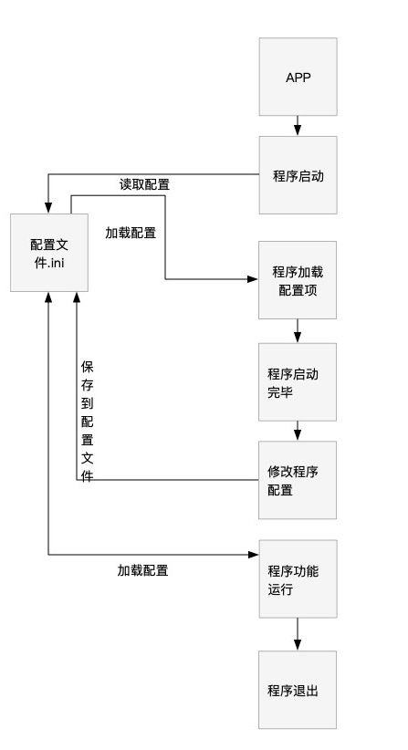

这是一个快速学习JavaScript的学习笔记2
作者:J.sky 发布时间:2019-12-22 10:55:19 Tag:
JavaScript
JavaScript语句
var和function是用来声明变量和语句的。 ```JavaScript var a,b,c=88;
```
条件语句
```JavaScript //if else var n = 2; if (n == 1) { alert('ok') } else { lert('no') }
//switch var m = 4; switch (m) { case 1: alert('no') break; case 4: alert('yes') default: //如果条件都不符合执行 break; }
```
循环语句
- for - 多次遍历代码块
- for/in - 遍历对象属性
- while - 当指定条件为 true 时循环一段代码块
-
do/while - 当指定条件为 true 时循环一段代码块
-
break 语句“跳出”循环。
- continue 语句“跳过”循环中的一个迭代。
```JavaScript //while 略 //do while 略
// for var i = 0, j = 10; for (i; i<j; i++) { console.log(i)
}
```
function
function用来声明一个函数。
```JavaScript function myFunction(p1, p2) { return p1 * p2; // 该函数返回 p1 和 p2 的乘积 }
var mf = myFunction(p1, p2) { return p1 * p2; // 该函数返回 p1 和 p2 的乘积 }
//见 test.js var mf = function myFunction(p1, p2) { return p1 * p2; // 该函数返回 p1 和 p2 的乘积 } document.querySelector("div").textContent = mf(6,2);//12
```
匿名函数与闭包
```JavaScript
//这是一个匿名函数 //匿名函数可以用来命名空间，且立即执行，避免变量污染。 (function(){console.log('匿名函数写法1')}()); //推荐第二种方法。 (function(s){console.log(s)})('匿名函数写法2');
//简书上一篇不错的JavaScript闭包的文章 //https://www.jianshu.com/p/80fb145d57d7 //闭包1 var add = (function () { var counter = 0; return function () {return counter += 1;} })();
add(); add(); console.log(add());//=>3
//闭包2 ;(function(){ var a=1; var addOne=function(x){ return x+a; } window.addOne=addOne; })() console.log(addOne(2)); // 3
```
基于Django构建的小学生英文单词背写检测考试系统。
作者:J.sky 发布时间:2019-11-07 16:10:19 Tag:
站长源创
PyWordTest

介绍
孩子的学习总是让父母担忧，英语学习也是让家长的头疼之事，做为程序员老爸不能整天忙于编程而忽视了孩子的教育，我们也要搞点事情。孩子英文单词到底背的怎么样了？别怕，用PyWordTest,创建题库，轻松搞定孩子的英语单词拼写情况。
> 本软件非英语单词学习软件，只是通过在线答题来检测孩子对单词拼写的掌握。
软件通过在线考试，记录考试结果及每个单词的拼写对错情况，最后通过一些算法分析孩子对单词拼写熟练度。
通过易错单词了解孩子哪些单词没有掌握，通过自建题库加强孩子对生疏单词的反复练习，更多功能还在研发中。
程序截图：


软件架构
基于Django构建的小学生英文单词背写检测考试系统。
环境需求： python (3.6.1) Django (2.2.7) Pillow
安装教程
进入程序目录后，运行python3 manage.py runserver
后台管理地址http://127.0.0.1:8000/admin/
管理员登陆:
用户名：admin 密码：17python.com
前台地址http://127.0.0.1:8000/
使用说明
程序已经采集了近1000小学生常用单词，后台可以根据自己的需要进行添加题库进行测试。
建议新建一个帐号用来考试建题库使用。
参与贡献
非常欢迎有想法的程序员参与提交代码，程序还很不完善！希望大家多多参与！
源码下载：
PYBabyLog记录孩子成长过程的日记
作者:J.sky 发布时间:2019-09-29 00:15:30 Tag:
站长源创
前言
岁月如风，唯有此忆。 任凭时光匆匆，记录点点滴滴。
当爸爸了，就多陪陪孩子，有事没事的记些与孩子在一起的时光，不要总把心思放在程序编码上，也多陪陪孩子！
做了那么多的程序，是时候为孩子做个数据库，也许将来某一天你也会翻翻看看。
PYBabyLog的前身是 BabyLog(Java开发版)
是用来记录孩子成长过程的日记，她包括：日记，语言，认知等，还包括身高，体重，并使用图表展示。
PYBabyLog
PYBabyLog使用Python开发的终端版本，其增删改查的操作都是在终端进行的，大大的节省了程序员老爹的宝贵时间。
采用Python+MySQL+argparse技术开发的全终端操作软件。
可以说编程新手下载随便看看都能看懂，软件功能非常简单，但意义非凡。
本程序数据库和BabyLog(Java开发版)通用，可以用来展示数据。 当然牛逼的你可以自己制作更威猛的展示，最好能提交一份代码给我好吗？
界面截图


安装方法
1.下载程序所有文件，并建立mysql数据库，导入下边的sql文件构建数据库数据库构建文件
2.修改DbHelp.py中的MySQL的连接配置项即可
终端版操作命令简介
整理中。。。。。
x.py -h 就都出来了。
写在结尾
其实有很多话想说，估计很多程序员都有了自己的孩子，记录一些和孩子在一起的时光吧，那将是你自己最好的回忆。
若给各位大虾能提交些代码或是有好的建议，非常欢迎！
程序源码下载：
如何在Python程序中使用配置文件.ini(ConfigParser)
作者:J.sky 发布时间:2019-06-18 15:29:01 Tag:
Python基础
引言
在Python程序的编写中，我们经常要为程序配置一个配置文件，有了配置文件，可以记录一些应用的参数配置，方便下次使用时直接调用。
那么如何为自己的Python应用制作一个配置文件并方便的使用呢？这篇博文就是用来讨论这个简单的问题的。
本博文仅为作者对配置文件使用的一些见解，错误难免，如有问题请指教。
相关链接： PythonINI配置文件读写的简单方法
本文重点讨论如何在程序中使用配置文件，ConfigParser类的具体使用，请参考上文。
需求
前一阵子做了个口算题的生成的应用，但是每次打开应用时都是加载的程序默认的参数，非常不方便，所以就要考虑为程序添加一个配置文件。 具体需求如下：
- 保存程序设置参数
- 功能使用配置文件的参数
- 组织以上功能封装成为一个类，方便以后功能的扩展。
分析
先上一个配置文件的工作流程图

通过流程图我们可以总结出配置文件类中需要的方法：
- 创建(若ini文件不存在)及加载本地配置文件
- 程序加载配置项参数
- 修改参数的时候保存配置项到ini文件
- 整理配置项参数为程序功能所用。
构建APPconfig类
首先导入必须的包：
import os
from configparser import ConfigParser
然后确定ini配置文件的物理位置，这里可以引用Django配置文件加载的方法。
#ini程序所在目录，也是当前程序的根目录
BASE_DIR = os.path.dirname(os.path.abspath(__file__))
#INI文件地址
INI_PATH = os.path.join(BASE_DIR, 'config.ini')
创建INI文件
若程序是首次启动，可以判断配置文件ini是否存在，若不存在可以创建一个带有默认数据参数的配置文件。
为类添加一个方法def create_ini(self)，此方法用来创建配置文件ini。
当在类启动方法中创建了ConfigParser对象后，就可以利用这个对象来编辑修改配置文件了。
加载及保存配置文件
若文件存在，即可直接加载了。
def readINI(self):
""" ini文件读取，返回一个INI配置对象
或是用来更新内存中的配置文件数据
"""
self.c.read(self.INI_PATH, encoding='utf-8')
创建一个方法，用来读取配置文件，因为在程序运行中需要随时加载更新内存中的参数，所以弄个方法存在也是必要的。
有读取了，我们还需要保存参数到配置文件里，在建一个保存的方法：
def saveINI(self):
'''保存或是更新ini文件'''
with open(self.INI_PATH, mode='w', encoding='utf-8') as ini:
self.c.write(ini)
这样，只要修改了参数，结尾就可以调用这个方法来保存配置文件。
修改并保存配置文件参数
为每一个参数指定一个方法，用来修改并保存当前参数到配置文件，当触发需要修改参数的事件是，直接调用当前方法即可修改配置文件里对应的参数了。
范例：
def saveNumber(self,number):
'''保存口算题个数设置数据'''
self.c.set('config','number',number)
self.saveINI()
读取参数
当创建完ConfigParser对象后，就可以使用该对象方便的操作配置文件的读取和保存了，具体方法这里不再敷衍，可以参考PythonINI配置文件读写的简单方法
也可以单独建立一个方法，用来返回一组数据供程序的功能使用。
有关配置文件的讨论就到此为止，以上也只是自己的一些浅显理解，详细代码请参考以下源码。